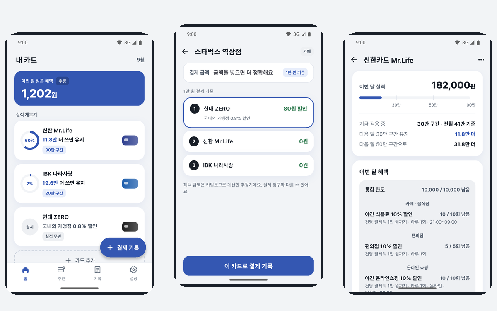
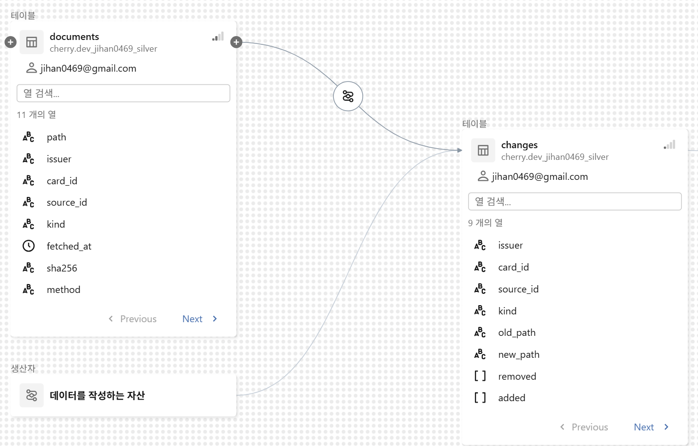

02 체리컨슘
내 카드로 어디서 결제할지 알려 주는 혜택 관리 앱

DatabricksPySparkDelta LakeAuto LoaderGitHub ActionsFlutter
12일
시작부터 첫 운영 배포
170 / 187건
실제 카드 명세서와 일치
0건
대조할 수 있는 범위의 계산 오류
파이프라인
- GitHub Actions가 매달 2번 카드사 원문을 올리면 Auto Loader가 새 파일만 Bronze에 적재
- 원문이 바뀐 카드만 LLM으로 추출해 Silver에 두고, 사람이 원문과 대조해 승인한 것만 MERGE로 Gold에 반영
- 규칙이 바뀌면 Delta 변경 데이터 피드와 AUTO CDC로 SCD Type 2 이력을 남김

Databricks Unity Catalog 계보 화면
판단
LLM이 뽑은 혜택을 그대로 쓰지 않은 이유일치율 44.7%
왜 어려웠나
카드 혜택은 약관 문장 속에 있습니다. 모델 3종을 비교해 보니 가장 나은 것도 항목 일치율이 44.7%였습니다.
왜 이렇게 만들었나
돈 계산에 들어가는 값이라 사람이 승인한 것만 Gold에 넣었습니다. MERGE로 반영해 다시 돌려도 중복이 쌓이지 않습니다.
계산이 맞는지 실제 명세서로 확인한 이유170 / 187건
왜 따로 검증했나
혼자 AI로 만든 돈 계산 코드라 같이 검토해 줄 사람이 없었습니다. 코드를 짠 쪽이 정답까지 만들면 같은 실수가 정답에도 들어갑니다.
왜 명세서였나
정답은 계산 코드를 안 본 다른 에이전트가 냈습니다. 그래도 규칙을 똑같이 잘못 읽을 수 있어서 카드사가 실제 청구한 금액을 마지막 정답으로 삼았습니다. 나머지 17건도 원인을 모두 찾았습니다.